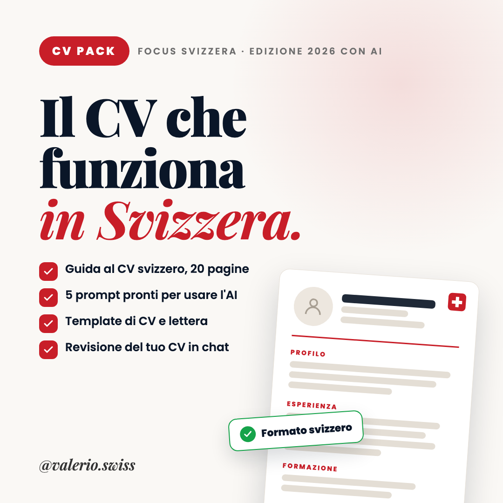

Un CV all'italiana, in Svizzera, raramente supera la prima lettura. Questo pack ti dà il formato giusto e ti accompagna a scriverlo, con il mio feedback sulla tua versione.
Accesso immediato: ricevi i file via email subito dopo il pagamento.
Acquista il CV Pack · 19 €Pagamento sicuro con carta o PayPal.

Il CV che mi ha fatto entrare nel mercato svizzero, smontato e replicabile sul tuo profilo.
Recensioni vere del CV Pack.
Valerio mi ha aiutato a sistemare ogni dettaglio, dalle parole giuste al formato. Un percorso facile da seguire, e oggi mi sento molto più sicuro quando mando candidature.
I consigli sono concreti e applicabili subito, e il format della guida è di altissima qualità. Davvero un'iniziativa preziosa per chi sta cercando lavoro all'estero.
Valerio me lo ha rivisto punto per punto, senza trascurare nessun dettaglio, e mi ha aiutato a trovare il giusto trade-off tra completezza e sintesi.
La guida è un PDF di 20 pagine; il template del CV e l'esempio compilato sono file Word (.docx), che puoi aprire anche con Google Docs o Pages.
The guide is a 20-page PDF; the CV template and the filled-in example are Word files (.docx), which you can also open with Google Docs or Pages. The materials are in Italian.
Sì. Nella guida c'è un esempio di profilo pensato per chi cerca il primo lavoro, oltre a quello per chi ha già esperienza.
Yes. The guide includes an example profile for people looking for their first job, as well as one for people with experience.
È pensato per la Svizzera, ma buona parte delle regole (formato, profilo, esperienze misurabili, lingue con i livelli europei) vale anche per le candidature in altri Paesi europei.
It's designed for Switzerland, but most of the rules (format, profile, measurable experience, languages with European levels) also apply to applications in other European countries.
No, e diffida di chi te lo promette. Ti dà il formato giusto e un secondo paio d'occhi sul tuo CV: le candidature restano nelle tue mani.
No, and be wary of anyone who promises that. It gives you the right format and a second pair of eyes on your CV: the applications are still up to you.
Contenuti e servizi offerti a titolo personale: informazioni generali, non consulenza legale, fiscale o finanziaria. Le opinioni sono personali e non rappresentano quelle del mio datore di lavoro.